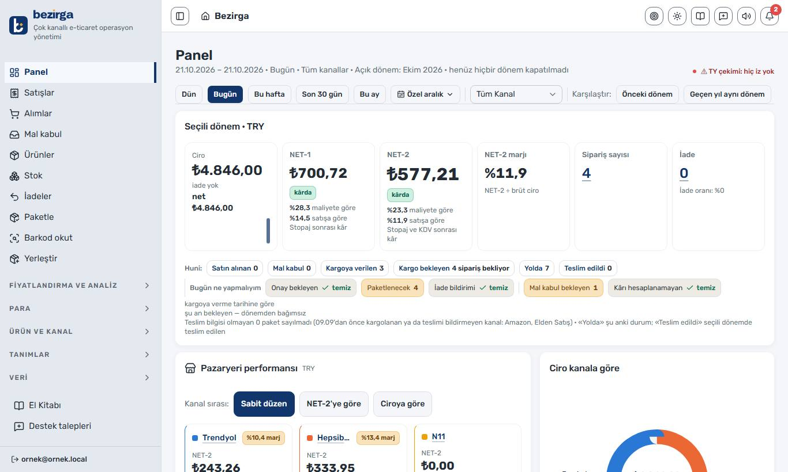
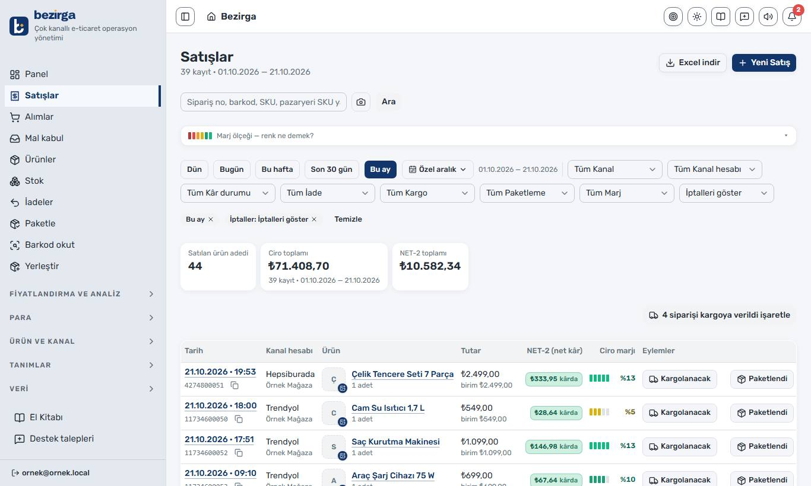
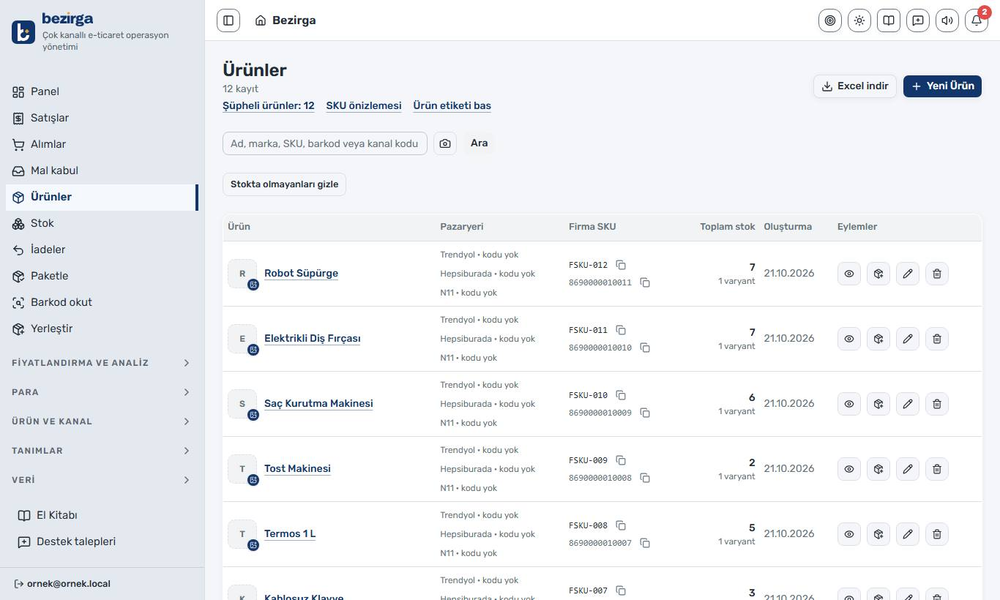
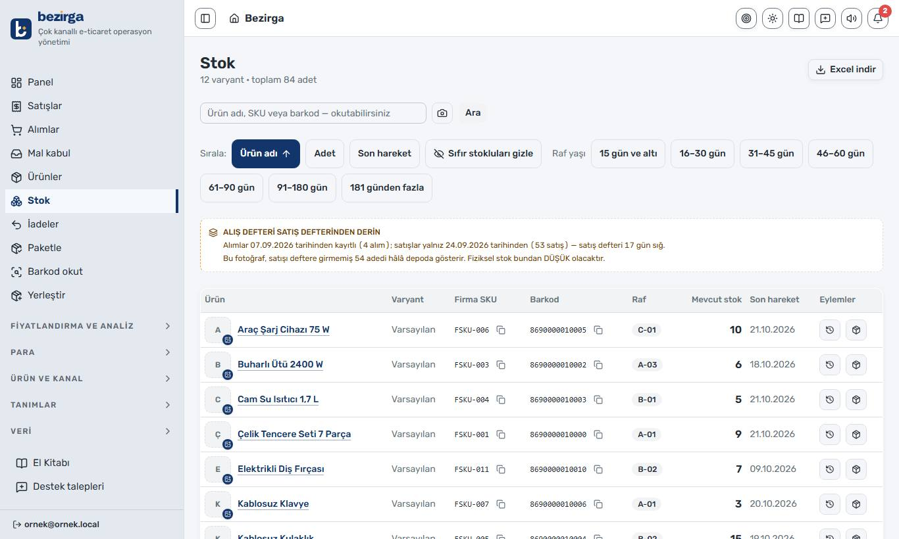
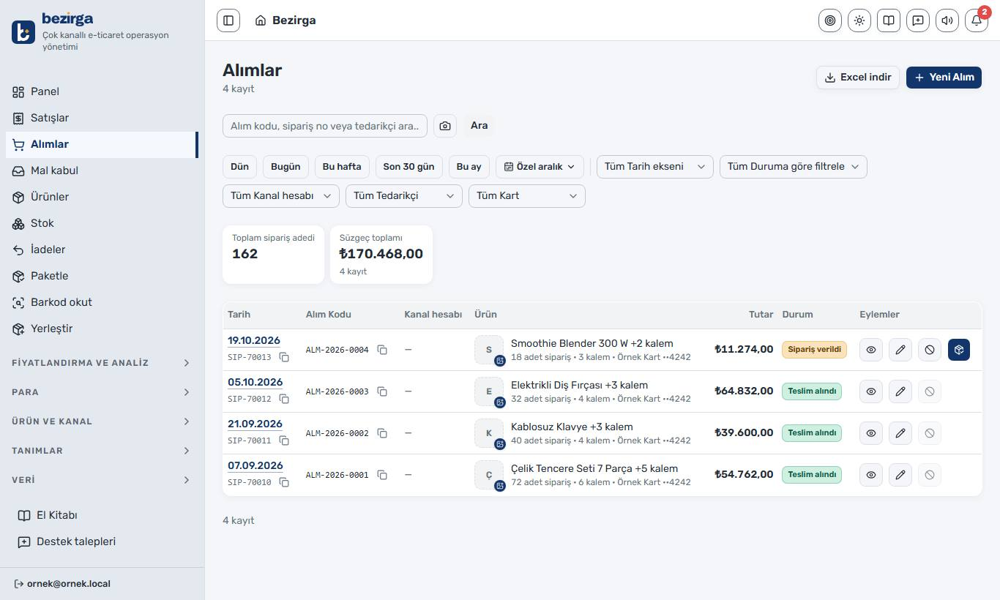
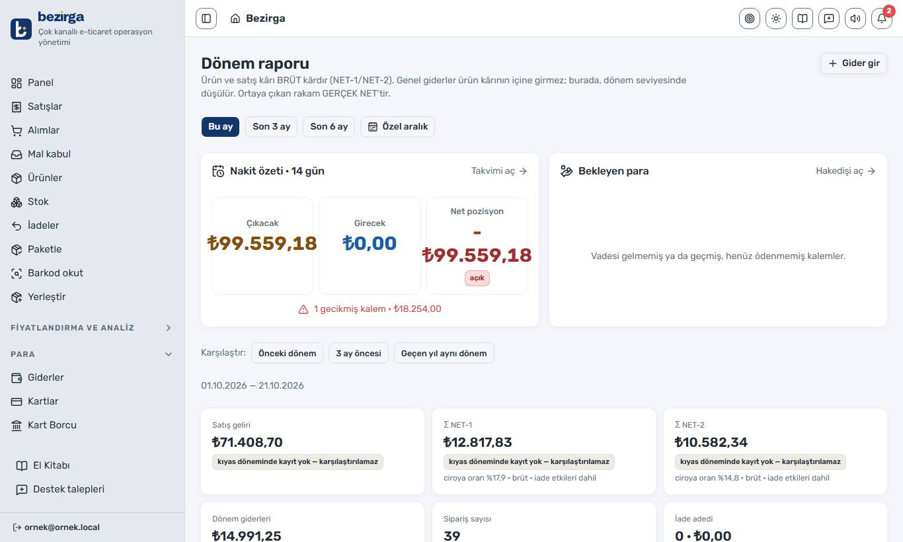
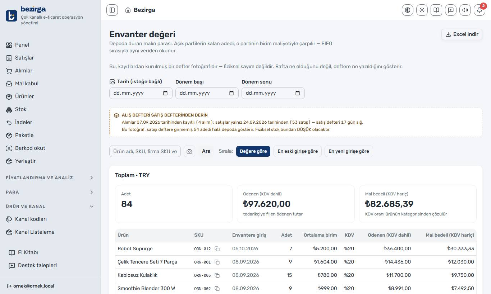
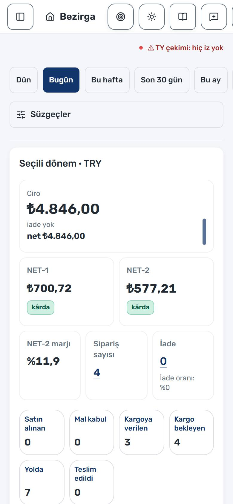
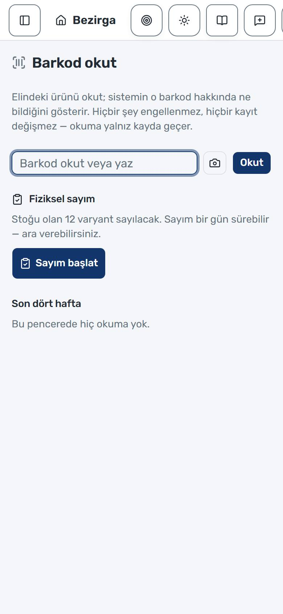
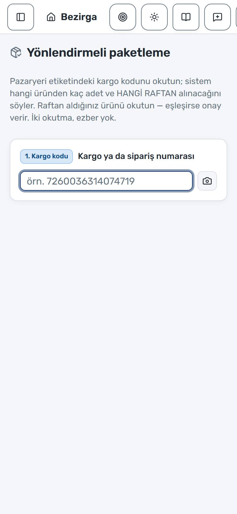

Çok kanallı satış
Pazaryerleri ve elden satış tek stoktan beslenir. Her kanalın kendi komisyonu, kendi kesintisi ve kendi kodu vardır.
Axcali, pazaryerlerinde ürün satan bir e-ticaret operasyonudur. Siparişi, stoğu, maliyeti ve kârı hazır bir programla değil; kendi yazdığımız ERP olan Bezirga ile yürütüyoruz.
Bu sayfadaki bütün ekran görüntüleri örnek veriden alınmıştır — gerçek müşteri, tedarikçi ve kâr verisi içermez.

İş modelimiz kampanya döngüsüne dayanır: kampanyayı takip eder, kampanya döneminde alır, satarız. Bu modelde kâr satış fiyatında değil; doğru alım, doğru maliyet ve doğru kesinti hesabında saklıdır. Bir pazaryeri komisyonu haftalık değişirken, stopaj ve KDV de hesaba girerken, «bu satıştan ne kaldı» sorusunun cevabı elle tutulan bir tabloda kaybolur. Biz de kendi sistemimizi yazdık.
Pazaryerleri ve elden satış tek stoktan beslenir. Her kanalın kendi komisyonu, kendi kesintisi ve kendi kodu vardır.
Mal kabulden raf yerleşimine, toplamadan paketlemeye kadar akışın tamamı barkodla yürür.
Komisyon, kargo, stopaj ve KDV düşülmüş iki ayrı net rakam. Tahmin değil, satış anında donmuş gerçek oranlar.
Bezirga bir deneme projesi değil; günlük işin üstünde duran, her gün kullanılan ve sürekli ölçülen bir sistemdir.
Alım, mal kabul, raf, stok, satış, iade, gider, kart borcu, pazaryeri hakedişi ve dönem raporu — hepsi aynı deftere yazar. Bir rakam ekranda görünüyorsa, onu üreten kayda tıklayarak gidilebilir.
Her giriş ve çıkış bir hareket olarak yazılır; stok bu hareketlerin toplamıdır. Her alım kendi maliyetini taşıyan bir partidir ve satış en eski partiden düşer.
Komisyon, kargo, hizmet bedeli, stopaj ve KDV ayrı ayrı hesaplanır. Oran satış anında kayda donar — oran sonradan değişse eski satışın hesabı kaymaz.
Trendyol, Hepsiburada ve N11'de siparişler otomatik düşer; stok ve fiyat tek düğmeyle kanallara gönderilir. Diğer kanallar tanımlıdır ve elle yürür.
Mal kabul, raf yerleştirme, sayım ve yönlendirmeli paketleme telefondan yürür. USB okuyucu ve kamera birlikte çalışır.
Kredi kartı borcu ve kesim günü, taksitli alımlar, giderler, pazaryeri hakedişleri ve nakit takvimi aynı yerde.
Rol ve izin ayrımı: depo çalışanı stok girer, kâr marjını görmez. Her ekranın izni ayrıdır ve otomatik denetlenir.
Bir ERP'yi güvenilir yapan şey ekran sayısı değil, bilmediği şeyi ne yaptığıdır. Bezirga'nın temel kararları şunlar:
Yazılan bir stok hareketi hiçbir zaman silinmez veya değiştirilmez; yanlış varsa ters işaretli bir düzeltme eklenir. «Dün stok kaçtı» sorusu ancak geçmiş bozulmadıysa cevaplanabilir.
Aynı ürünü farklı zamanlarda farklı fiyata almış olabilirsiniz. Kâr, satılan partinin gerçek maliyetiyle hesaplanır.
Komisyonu girilmemiş ya da maliyeti bilinmeyen bir satış «hesaplanamadı» diye işaretlenir, nedeni yazılır ve toplama girmez. Uydurma bir rakam, boş bir hücreden tehlikelidir.
Alım avroyla, satış lirayla yapıldıysa sistem kur uydurmaz — o satışın kârını hesaplamaz ve nedenini yazar.
Ürün kararı brüt kârla verilir; kira ve sabit giderler ay sonunda topluca düşülür. Yoksa kararı zaten ödenmiş bir masraf bozar.
Nerede olunursa olunsun «bugün» Türkiye'nin günüdür. Ay raporu, kart kesim günü ve tarih varsayılanları buna göre çalışır.
Bezirga bugün tek bir firmanın —kendi operasyonumuzun— işini yürütüyor ve orada kanıtlanıyor. Çok firmalı kullanım ve paket satışı tasarlandı, ama henüz açılmadı. Elimizde olmayan bir özelliği varmış gibi anlatmıyoruz; sistemin kendisi de tam olarak bu yüzden böyle kuruldu.
Aşağıdaki görüntüler sistemin kendisinden alınmıştır. Rakamlar uydurma bir veritabanından gelir ve gerçek defteri göstermez — ama hesapları üreten motor gerçeğin aynısıdır.






Okutma, paketleme ve panel telefonda da tam çalışır. Dokunulabilir her öğe parmakla kullanılacak büyüklüktedir.

Panel — kutular alt alta

Barkod okut — kamera veya USB

Paketle — yönlendirmeli
Hangisiyle geldiyseniz, aşağıda sizin tarafınız var.
Sipariş, stok ve ödeme tarafımız tek sistemden yürür; bir mutabakat sorusunun cevabı tahminle değil kayıtla verilir.
Operasyonun hangi üründe ne kazandığı, sermayenin nerede beklediği ve nakdin ne zaman döndüğü ekranda durur.
Bezirga bugün kendi işimizde çalışıyor. Başka firmalara açılması tasarlandı ama henüz başlamadı — ilgileniyorsanız haberdar edebiliriz.
Hazır programlar bu işin kesinti ve maliyet tarafını yeterince doğru hesaplamıyordu. Biz de kendi sistemimizi yazdık ve her gün onu kullanıyoruz.
Tedarik, iş ortaklığı ya da sistemin kendisi — hangisi için yazarsanız yazın, dönüş yapıyoruz.